8 BLM-TRFO Pinyon-Juniper (Colorado)
Now that we have reviewed the process and evaluation method and set up functions to standardize and streamline our data processing, let’s do it for another site: BLM Tres Rios Field Office (BLM-TRFO; Colorado) of the Pinyon–Juniper Adaptive Silviculture project
8.1 Field Data
This data is from the Pinyon–Juniper Adaptive Silviculture project, a co-produced effort between researchers and practitioners, to develop ecologically grounded and operationally feasible thinning prescriptions that sustain pinyon-juniper woodlands led by Miranda Redmond. Data was acquired from plots in post-treatment blocks that were thinned under three experimental thinning prescriptions spanning a gradient of both thinning intensity and spatial variability: a uniform low-intensity treatment, a uniform high-intensity treatment, and a heterogeneous treatment.
Here are the notes I got along with the field inventory data:
Attached is a csv of the PJ data from the Dawson Creek site. I added the plot center locations and calculated locations of each measured tree from the original distance and azimuth information. Below is a list of notes (and unfortunately some weird things) about it.
- There are 65 rows (out of 1603) with any missing data. The missing parts are usually in a location-related column with several in a tree metric column.
- There are 43 DRC (diameter at root collar) observations with two separate values separated by a comma.
- There are 8 circumstances where there are potential duplicate trees - where plot, distance, and azimuth are identical, but tree information is different.
- In the metadata crown length is described as “length from first longest side of the adult tree canopy, in m” and crown width is described as “width from second longest side of the adult tree canopy, in m”. However, crown width is frequently greater than the length value and after some looking the length value doesn’t seem to equal height-cbh either.
- The plot column includes unit, treatment type, and plot ID whereas the tree_id column includes that information as well as a per-plot ID of each tree.
The multiple DRC values are due to multiple stems splitting at ground level. I think we should treat these as one tree, as they’re recorded in the data. To combine the two stem values into a single DRC, we could either take the larger of the two or sum them.
The location duplication issue is due to two trees (or more likely stems from the same individual that split below ground) growing very close together. We should continue to treat them as separate trees, as shown in the data.
Height, cbh, length and width are all in meters. DRC is in cm.
plots used a 10 m radius to define a circular plot area
load in the trees which were measured if they were at least 2m in height
this_min_ht_m <- 2
blm_trfo_trees <-
readr::read_csv("c:/data/usfs/blm_trfo_uas/data/pj_trees_george.csv", show_col_types = F, progress = F) %>%
dplyr::rename_with(
~ tolower(.x) %>%
stringr::str_squish() %>%
make.names() %>%
stringr::str_replace_all( "\\.{2,}", ".") %>%
stringr::str_remove( "\\.$") %>%
stringr::str_replace_all( "\\.", "_")
) %>%
dplyr::mutate(
dplyr::across(
-c(plot,tree_id,species,unit,treatment_code,drc)
, as.numeric
)
, dplyr::across(
c(species,unit,treatment_code)
, ~ stringr::str_trim(.x) %>% toupper()
)
) %>%
# rename
dplyr::rename_with(
.cols = c(height,cbh,crown_width,crown_length)
, .fn = ~paste0(.x,"_m",recycle0 = T)
) %>%
dplyr::mutate(
plot_id = plot %>%
stringr::str_squish() %>%
dplyr::na_if("")
# , dbh_cm = dbh/0.394
, tree_height_m = height_m
, species_symbol =
species %>%
stringr::str_remove_all("\\s") %>%
toupper() %>%
dplyr::na_if("")
) %>%
# filter
dplyr::filter(
!is.na(plot_id)
& !is.na(tree_height_m)
& tree_height_m >= this_min_ht_m
& !is.na(species_symbol)
& !is.na(plot_center_x)
& !is.na(plot_center_y)
& !is.na(tree_x)
& !is.na(tree_y)
) %>%
dplyr::select(plot_id,tree_height_m,species_symbol,tree_x,tree_y,plot_center_x,plot_center_y) %>%
# guessing this is WGS 84
sf::st_as_sf(coords = c("tree_x", "tree_y"), crs = 4326, remove = F) %>%
# transform to meter-based projection
sf::st_transform(sf::st_crs(6341)) %>%
dplyr::mutate(
treeID = dplyr::row_number() %>% as.character()
, tree_x = sf::st_coordinates(geometry)[,1] #lon
, tree_y = sf::st_coordinates(geometry)[,2] #lat
)
# blm_trfo_trees %>% dplyr::glimpse()get the plots, which for this data have coordinates in the tree level data
blm_trfo_plots <-
blm_trfo_trees %>%
sf::st_drop_geometry() %>%
dplyr::distinct(plot_id,plot_center_x,plot_center_y) %>%
# spatial that
sf::st_as_sf(coords = c("plot_center_x", "plot_center_y"), crs = 4326, remove = F) %>%
sf::st_transform(sf::st_crs(blm_trfo_trees)) %>%
dplyr::mutate(
plot_radius_meters = 10
) %>%
sf::st_buffer(.$plot_radius_meters)
# huh?
# blm_trfo_plots %>% dplyr::glimpse()
# keep only plots with trees and trees with plots
# nrow(blm_trfo_plots)
blm_trfo_plots <- blm_trfo_plots %>% dplyr::filter(plot_id %in% unique(blm_trfo_trees$plot_id))
# nrow(blm_trfo_plots)
# nrow(blm_trfo_trees)
blm_trfo_trees <- blm_trfo_trees %>% dplyr::filter(plot_id %in% unique(blm_trfo_plots$plot_id))
# nrow(blm_trfo_trees)
# save to reference list
# add to the ref trees list
this_data_site_nm <- project_data_df %>%
dplyr::filter(tolower(data_site_nm)=="blm_trfo") %>%
dplyr::pull(data_site_nm)
ref_plots_list[[this_data_site_nm]] <- blm_trfo_plots
ref_trees_list[[this_data_site_nm]] <- blm_trfo_treeslet’s check those field trees out to orient ourselves to the location
ref_trees_list[[this_data_site_nm]] %>%
mapview::mapview(
zcol = "species_symbol"
, layer.name="BLM-TRFO Pinyon-Juniper: field trees"
, popup=F
)# blm_trfo_trees %>%
# sf::st_union() %>%
# sf::st_bbox() %>%
# sf::st_as_sfc() %>%
# sf::st_centroid() %>%
# sf::st_transform(crs=4326) %>%
# sf::st_coordinates()
# # # # 39.35402,-105.3837what is the distribution of species?
ref_trees_list[[this_data_site_nm]] %>%
sf::st_drop_geometry() %>%
dplyr::count(species_symbol) %>%
dplyr::arrange(desc(n)) %>%
dplyr::mutate(pct=scales::percent(n/sum(n), accuracy=0.1))## # A tibble: 2 × 3
## species_symbol n pct
## <chr> <int> <chr>
## 1 PIED 938 61.3%
## 2 JUOS 592 38.7%8.2 Point Cloud Data
data was collected over the study site via a UAS-DAP (digital aerial photogrammetry) flight. On April 29th and 30th, 2025, BLM Remote Sensing staff mapped approximately 2,000 acres of the Dawson site using an Uncrewed Aerial System (UAS). In total 24 flights were conducted to collect ~5,500 stereo-images. The raw imagery was then processed photogrammetrically with Agisoft Metashape software to produce high-resolution geospatial data products including 3D point cloud data and an RGB spectral orthomosaic.
let’s check out the raw point cloud data
blm_trfo_las_f_temp <- "d:/BLM_CO_SWDF_DawsonFuelsTreatment/Final/PointCloud/Tiles"
blm_trfo_las_ctg_temp <- lidR::readLAScatalog(blm_trfo_las_f_temp)
# blm_trfo_las_ctg_temp
# blm_trfo_las_ctg_temp@data %>% dplyr::glimpse()let’s check out the point cloud data coverage compared to the field plot data
# there might be something wrong with this data...let's see what c2t makes of it
blm_trfo_las_ctg_temp %>%
sf::st_union() %>%
sf::st_as_sf() %>%
dplyr::mutate(data = "UAS-DAP data extent") %>%
mapview::mapview(
zcol = "data"
, layer.name="BLM-TRFO Pinyon-Juniper: UAS-DAP data"
, popup=F
) +
mapview::mapview(
ref_trees_list[[this_data_site_nm]]
, zcol = "species_symbol"
, layer.name="BLM-TRFO Pinyon-Juniper: field trees"
, popup=F
)use cloud2trees to process the raw point cloud data to generate a CHM for use in tree detection
################################################
# input/output data str
################################################
# outdir
c2t_output_dir_temp <- project_data_df %>%
dplyr::filter(tolower(data_site_nm)=="blm_trfo") %>%
dplyr::pull(data_dir)
c2t_process_dir_temp <- file.path(c2t_output_dir_temp, "point_cloud_processing_delivery")
# timer file
c2t_tracking_fnm_temp <- file.path(c2t_process_dir_temp, "processed_tracking_data.csv")
# save to tracking df
project_data_df <- project_data_df %>%
dplyr::mutate(
c2t_process_dir = ifelse(data_dir==c2t_output_dir_temp, c2t_process_dir_temp, c2t_process_dir)
, c2t_tracking_fnm = ifelse(data_dir==c2t_output_dir_temp, c2t_tracking_fnm_temp, c2t_tracking_fnm)
)
# project_data_df %>% print(n=nrow(project_data_df))# get point cloud density and raster resolutions
get_ptcld_density_chm_res_temp <- get_ptcld_density_chm_res_fn(blm_trfo_las_ctg_temp)
# get_ptcld_density_chm_res_temp# fnm
chm_fnm_temp <- file.path(c2t_process_dir_temp, paste0("chm_",get_ptcld_density_chm_res_temp$chm_res_m,"m.tif") )
dtm_fnm_temp <- file.path(c2t_process_dir_temp, paste0("dtm_",get_ptcld_density_chm_res_temp$dtm_res_m,"m.tif") )
# save to tracking df
project_data_df <- project_data_df %>%
dplyr::mutate(
las_pts_m2 = ifelse(data_dir==c2t_output_dir_temp, get_ptcld_density_chm_res_temp$pts_m2, las_pts_m2) # las_pts_m2
, chm_res_m = ifelse(data_dir==c2t_output_dir_temp, get_ptcld_density_chm_res_temp$chm_res_m, chm_res_m) # chm_res_m
, chm_fnm = ifelse(data_dir==c2t_output_dir_temp, chm_fnm_temp, chm_fnm) # chm_fnm
, dtm_res_m = ifelse(data_dir==c2t_output_dir_temp, get_ptcld_density_chm_res_temp$dtm_res_m, dtm_res_m) # dtm_res_m
, dtm_fnm = ifelse(data_dir==c2t_output_dir_temp, dtm_fnm_temp, dtm_fnm) # dtm_fnm
)
# project_data_df %>% dplyr::filter(data_dir==c2t_output_dir_temp) %>% dplyr::glimpse()
##############################################################
# cloud2trees::cloud2raster
##############################################################
if(
!file.exists(chm_fnm_temp)
|| !file.exists(dtm_fnm_temp)
){
# time it
st_temp <- Sys.time()
# run it
# cloud2trees
cloud2raster_ans <- cloud2trees::cloud2raster(
output_dir = c2t_output_dir_temp
, input_las_dir = blm_trfo_las_f_temp
, accuracy_level = 2
, keep_intrmdt = F
, dtm_res_m = get_ptcld_density_chm_res_temp$dtm_res_m # (1/sqrt(pts_m2_temp))*2
, chm_res_m = get_ptcld_density_chm_res_temp$chm_res_m # 1/sqrt(pts_m2_temp)
, min_height = 0 # effectively generates a DSM based on non-ground points
)
# timer
mins_temp <- difftime(Sys.time(),st_temp,units = "mins") %>% as.numeric()
# save tracking
dplyr::tibble(
timer_cloud2raster_mins = mins_temp
) %>%
write.csv(
file = c2t_tracking_fnm_temp
, row.names = F, append = F
)
}else{
dtm_temp <- terra::rast( dtm_fnm_temp )
chm_temp <- terra::rast( chm_fnm_temp )
cloud2raster_ans <- list(
"dtm_rast" = dtm_temp
, "chm_rast" = chm_temp
)
}we’ll set the minimum CHM resolution to 0.25 m to match the cloud2trees default. if the automatically-determined CHM resolution based on the point cloud density used in the cloud2trees::cloud2raster() was lower than this level, we’ll aggregate the raster using terra::aggregate() and terra::resample() to get the exact target resolution. if the determined CHM resolution was higher than this level due to low point density, we will use the CHM as-is since this is already the finest resolution possible with the point cloud density.
let’s aggregate the CHM for this site and put it into a list of CHM rasters that we can map over in all of the processing
agg_chm_rast_temp <- agg_chm_rast_fn(
chm = cloud2raster_ans$chm_rast
, res = min_chm_res
, dir =
project_data_df %>%
dplyr::filter(tolower(data_site_nm)=="blm_trfo") %>%
dplyr::pull(c2t_process_dir)
)
# agg_chm_rast_temp
# agg_chm_rast_temp %>% terra::clamp(lower = 1.37, values = F) %>% terra::plot()
# add to the chm list
chm_list[[this_data_site_nm]] <- agg_chm_rast_temp
# chm_listwhat if we filter the CHM to height values >= 1.37 m and add the plot boundaries?
# plot to check out the fine-resolution CHM raster
chm_list[[this_data_site_nm]] %>%
terra::clamp(lower=1.37,values=F) %>%
# terra::summary()
terra::plot(
col = viridis::plasma(n=100)
, axes=F
, plg = list(
title = "CHM (m)"
, cex = 0.8
, title.cex = 0.9
, shrink = 0.6
)
)## |---------|---------|---------|---------|========================================= ref_plots_list[[this_data_site_nm]] %>%
sf::st_transform(terra::crs(chm_list[[this_data_site_nm]])) %>%
terra::vect() %>%
terra::plot(add=T, col = NA, border = "cyan")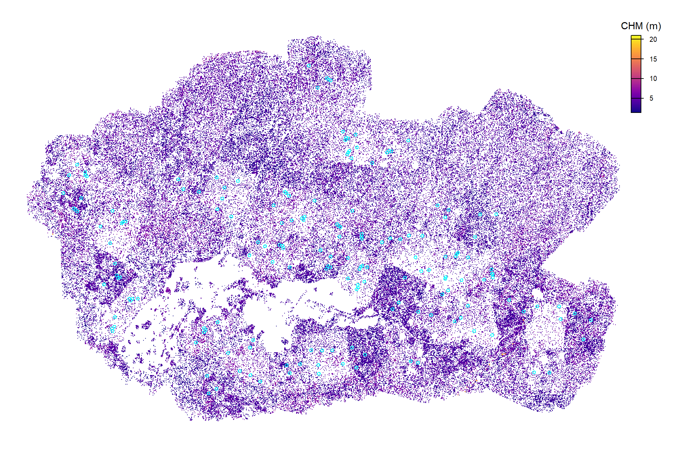
that’s a large area
and convert the reference trees and plot data to the point cloud data projection
ref_plots_list[[this_data_site_nm]] <- ref_plots_list[[this_data_site_nm]] %>% sf::st_transform(terra::crs(chm_list[[this_data_site_nm]]))
ref_trees_list[[this_data_site_nm]] <- ref_trees_list[[this_data_site_nm]] %>%
sf::st_transform(terra::crs(chm_list[[this_data_site_nm]])) %>%
dplyr::mutate(
tree_x = sf::st_coordinates(geometry)[,1] #lon
, tree_y = sf::st_coordinates(geometry)[,2] #lat
)8.3 Tree Detection
cloud2trees implements a CHM-based individual tree detection method accessible via cloud2trees::raster2trees(). this method requires a window function used to set the search radius used to find local maxima in the CHM. These local maxima represent individual tree top points and are subsequently used to delineate individual tree crowns via a marker-controlled watershed segmentation
because the objective of this study is to evaluate a species/genera classification method, we just want the best ITD results we can get based on the field reference data. We are not interested in evaluating tree segmentation here, that has already been done across varied input data and forest types.
use our function to clip the CHM to the plot plus a buffer and run cloud2trees::raster2trees() for each window function. the return should be a spatial tree list unique by function.
get the individual tree predictions for each window function for the area within the field reference plots with a buffer
c2t_process_dir_temp <-
project_data_df %>%
dplyr::filter(tolower(data_site_nm)=="blm_trfo") %>%
dplyr::pull(c2t_process_dir)
fnm_temp <- file.path(c2t_process_dir_temp,"ws_pred_trees.gpkg")
project_data_df <- project_data_df %>%
dplyr::mutate(
ws_pred_trees_fnm = ifelse(c2t_process_dir==c2t_process_dir_temp, fnm_temp, ws_pred_trees_fnm)
)
if(!file.exists(fnm_temp)){
blm_trfo_ws_pred_trees <-
1:nrow(ref_plots_list[[this_data_site_nm]]) %>%
purrr::map(
\(rn)
ws_testtest_fn(
chm = chm_list[[this_data_site_nm]]
, buffer = 5.5
, plot_sf =
ref_plots_list[[this_data_site_nm]] %>%
dplyr::ungroup() %>%
dplyr::slice(rn) %>%
sf::st_union()
# a named list of functions ex: cloud2trees::itd_ws_functions()
, ws_fn_list = get_ws_fn_list_ans # cloud2trees::itd_ws_functions() #
)
) %>%
purrr::list_rbind(names_to = "plot_dta_idx")
# add plot id
blm_trfo_ws_pred_trees <-
blm_trfo_ws_pred_trees %>%
dplyr::left_join(
ref_plots_list[[this_data_site_nm]] %>%
dplyr::mutate(plot_dta_idx=dplyr::row_number()) %>%
sf::st_drop_geometry() %>%
dplyr::select(plot_dta_idx,plot_id)
, by = "plot_dta_idx"
) %>%
sf::st_set_geometry("geometry")
# blm_trfo_ws_pred_trees %>% sf::st_crs()
# blm_trfo_ws_pred_trees %>% dplyr::glimpse()
# blm_trfo_ws_pred_trees %>% sf::st_drop_geometry() %>% dplyr::count(ws_fn_nm)
# get dbh
blm_trfo_ws_pred_trees_dbh_temp <-
blm_trfo_ws_pred_trees %>%
dplyr::rename(xxxtreeID=treeID) %>%
dplyr::mutate(
treeID = dplyr::row_number() %>% as.character()
) %>%
cloud2trees::trees_dbh()
# blm_trfo_ws_pred_trees_dbh_temp %>% dplyr::glimpse()
# add to trees
blm_trfo_ws_pred_trees <-
blm_trfo_ws_pred_trees %>%
dplyr::mutate(
join_id = dplyr::row_number() %>% as.character()
) %>%
dplyr::left_join(
blm_trfo_ws_pred_trees_dbh_temp %>%
sf::st_drop_geometry() %>%
dplyr::mutate(
join_id = as.character(treeID)
) %>%
dplyr::select(
join_id, tidyselect::starts_with("fia_est_dbh"), dbh_cm
)
, by = "join_id"
)
# blm_trfo_ws_pred_trees %>% dplyr::glimpse()
# # plot real quick
# blm_trfo_ws_pred_trees %>%
# sf::st_drop_geometry() %>%
# dplyr::slice_sample(n = 9999) %>%
# ggplot2::ggplot(mapping = ggplot2::aes(x=tree_height_m,y=dbh_cm)) +
# ggplot2::geom_point() +
# ggplot2::geom_point(mapping = ggplot2::aes(y=fia_est_dbh_cm_lower),color="gray") +
# ggplot2::geom_point(mapping = ggplot2::aes(y=fia_est_dbh_cm_upper),color="gray")
# save
sf::st_write(blm_trfo_ws_pred_trees, dsn = fnm_temp, quiet = T, append = F)
}else{
blm_trfo_ws_pred_trees <- sf::st_read(fnm_temp, quiet = T)
}
blm_trfo_ws_pred_trees <- blm_trfo_ws_pred_trees %>%
dplyr::mutate(
ws_type =
ws_fn_nm %>%
# removes all numeric digits
stringr::str_remove_all("[0-9]+") %>%
stringr::str_replace_all("_"," ") %>%
stringr::str_squish() %>%
as.factor() %>%
forcats::fct_inorder(ordered = T)
, treeID = as.character(treeID)
)
# blm_trfo_ws_pred_trees %>% dplyr::glimpse()
# blm_trfo_ws_pred_trees %>% sf::st_drop_geometry() %>% dplyr::count(ws_type)let’s check out one example field plot and a few different window function tree detection and crown delineation results
# plot
p_temp <- ref_plots_list[[this_data_site_nm]] %>% dplyr::slice(1)
if(as.numeric(sf::st_area(p_temp))>2000){
p_temp <- p_temp %>%
sf::st_centroid() %>%
sf::st_buffer(sqrt(2000)/2) %>%
sf::st_bbox() %>%
sf::st_as_sfc() %>%
sf::st_as_sf() %>%
dplyr::mutate(plot_id = p_temp$plot_id[1])
}
# some trees
t_temp <-
blm_trfo_ws_pred_trees %>%
dplyr::filter(plot_id==p_temp$plot_id[1]) %>%
sf::st_intersection(p_temp) %>%
dplyr::inner_join(
blm_trfo_ws_pred_trees %>%
sf::st_drop_geometry() %>%
dplyr::distinct(ws_fn_nm,ws_type) %>%
dplyr::slice_sample(n = 3, by = ws_type) %>%
dplyr::select(ws_fn_nm)
, by = "ws_fn_nm"
)
chm_temp <- chm_list[[this_data_site_nm]] %>%
terra::crop(
t_temp %>%
sf::st_union() %>%
sf::st_bbox() %>%
sf::st_as_sfc() %>%
terra::vect()
, mask = T
)
# terra::plot(chm_temp)
plt_temp <-
chm_temp %>%
terra::clamp(lower = 1.37, values = F) %>%
terra::as.data.frame(xy=T) %>%
dplyr::rename(f=3) %>%
ggplot2::ggplot() +
ggplot2::geom_tile(
mapping = ggplot2::aes(x=x,y=y,fill=f)
, color = NA
, lwd = 0
) +
ggplot2::scale_fill_viridis_c(option = "plasma", na.value = "transparent", name = "CHM (m)") +
ggplot2::scale_x_continuous(expand = c(0, 0)) +
ggplot2::scale_y_continuous(expand = c(0, 0)) +
ggplot2::theme_void() +
ggplot2::theme(legend.position = "top")
plt_temp +
ggplot2::geom_sf(
data = p_temp %>% sf::st_transform(terra::crs(chm_temp))
, fill = NA
, color = "black"
, lwd = 0.8
) +
ggplot2::geom_sf(
data = t_temp
, mapping = ggplot2::aes(color = ws_type)
, fill = NA
, lwd = 0.7
) +
ggplot2::scale_color_viridis_d() +
ggplot2::facet_wrap(facets = dplyr::vars(ws_fn_nm), ncol = 3) +
ggplot2::theme(
strip.text = ggplot2::element_text(face = "bold")
, strip.background = ggplot2::element_rect(color = "black")
, panel.border = ggplot2::element_rect(color = "black", fill = NA, linewidth = 0.5)
) +
ggplot2::guides(
color = "none"
)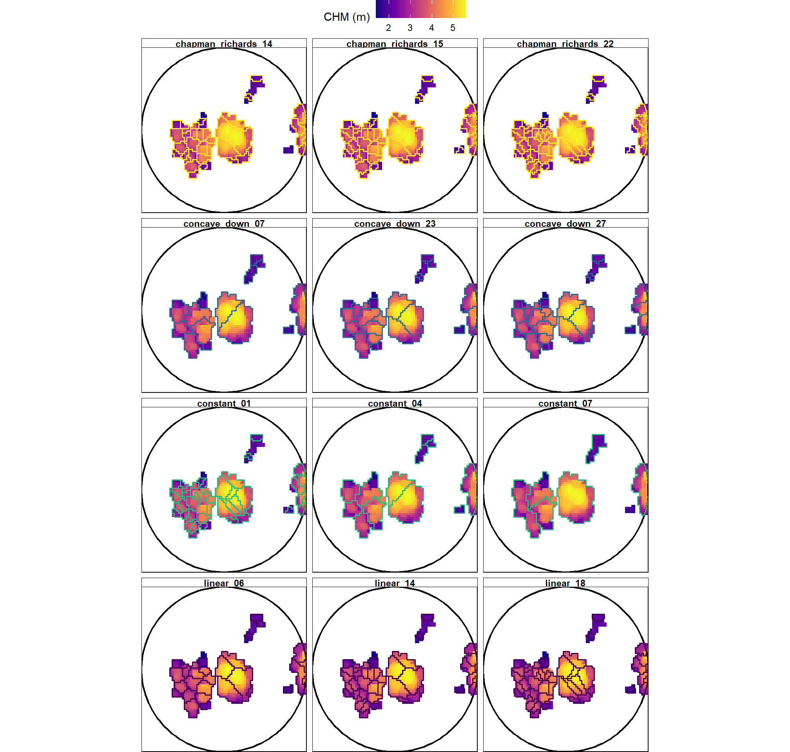
now we need a function to perform instance matching of the predictions and reference data. to keep things simple, since all the reference field data includes point locations, we’ll perform matching based on a spatial intersection of these points with the predicted tree crowns. if multiple tree points fall within a single crown, we’ll select the tree that is closest in terms of size based on whatever field data is available (height or DBH). One predicted tree will only be matched with one field reference tree and vice-versa.
##################################################################
##################################################################
##################################################################
# plot_iter_instance_match_fn
# loop over plots and ws functions for instance match
##################################################################
##################################################################
##################################################################
c2t_process_dir_temp <-
project_data_df %>%
dplyr::filter(tolower(data_site_nm)=="blm_trfo") %>%
dplyr::pull(c2t_process_dir)
fnm_temp <- file.path(c2t_process_dir_temp,"ws_instance_match.csv")
if(!file.exists(fnm_temp)){
blm_trfo_ws_instance_match <-
plot_iter_instance_match_fn(
ref_plots = ref_plots_list[[this_data_site_nm]]
, ref_pts = ref_trees_list[[this_data_site_nm]]
, pred_polys = blm_trfo_ws_pred_trees
, min_ht_m = this_min_ht_m
, min_dbh_cm = NA
)
readr::write_csv(blm_trfo_ws_instance_match, file = fnm_temp, append = F, progress = F)
}else{
blm_trfo_ws_instance_match <- readr::read_csv(file = fnm_temp, show_col_types = F, progress = F)
}
# huh?
# blm_trfo_ws_instance_match %>% dplyr::glimpse()
##################################################################
##################################################################
##################################################################
# agg_ground_truth_match
# loop over plots and ws functions for accuracy eval
##################################################################
##################################################################
##################################################################
c2t_process_dir_temp <-
project_data_df %>%
dplyr::filter(tolower(data_site_nm)=="blm_trfo") %>%
dplyr::pull(c2t_process_dir)
fnm_temp <- file.path(c2t_process_dir_temp,"agg_ground_truth_match_ans.csv")
if(!file.exists(fnm_temp)){
# ?purrr::pmap
# A data frame is an important special case of .l. It will cause .f to be called once for each row.
blm_trfo_agg_ground_truth_match_ans <-
blm_trfo_ws_instance_match %>%
dplyr::distinct(plot_id,ws_fn_nm) %>%
purrr::pmap(function(plot_id, ws_fn_nm) {
# the unique row data
d <- dplyr::tibble(plot_id = plot_id, ws_fn_nm = ws_fn_nm)
# filter full set based on the data
j <-
blm_trfo_ws_instance_match %>%
dplyr::inner_join(
d
, by = dplyr::join_by("plot_id","ws_fn_nm")
)
# agg_ground_truth_match
d %>%
dplyr::bind_cols(agg_ground_truth_match(j))
}) %>%
purrr::list_rbind()
readr::write_csv(blm_trfo_agg_ground_truth_match_ans, file = fnm_temp, append = F, progress = F)
}else{
blm_trfo_agg_ground_truth_match_ans <- readr::read_csv(file = fnm_temp, show_col_types = F, progress = F)
}
# huh?
# blm_trfo_agg_ground_truth_match_ans %>% dplyr::glimpse()aggregate the plot level data to the window function to get the answer we’ve been searching for
# blm_trfo_agg_ground_truth_match_ans %>%
# dplyr::count(ws_fn_nm) %>%
# dplyr::count(n)
agg_temp <-
blm_trfo_agg_ground_truth_match_ans %>%
dplyr::group_by(ws_fn_nm) %>%
dplyr::summarize(
n_plots = dplyr::n()
, dplyr::across(
.cols = c(precision,recall,f_score,tidyselect::ends_with("_rate"))
, list(
mean= ~ mean(.x,na.rm=T)
, median= ~ median(.x,na.rm=T)
)
)
) %>%
dplyr::ungroup() %>%
dplyr::left_join(
blm_trfo_ws_pred_trees %>%
sf::st_drop_geometry() %>%
dplyr::distinct(ws_fn_nm, ws_type)
, by = "ws_fn_nm"
) %>%
dplyr::mutate(
f_score_rank = dplyr::min_rank(-f_score_mean)
, ws_fn_nm_fact = forcats::fct_reorder(ws_fn_nm, f_score_rank)
# , dplyr::across(
# .cols = dplyr::where(is.numeric)
# , ~ round(.x,2) %>% as.character() %>% as.numeric()
# )
) %>%
dplyr::arrange(desc(f_score_mean),desc(f_score_median),desc(recall_mean),desc(precision_mean))
# agg_temp %>% dplyr::glimpse()let’s check out the plot-level distribution of F-score for the top window functions (remember this particular data has one “plot”, a stem map)
blm_trfo_agg_ground_truth_match_ans %>%
# add agg data
dplyr::inner_join(
agg_temp %>%
dplyr::filter(f_score_rank<=11) %>%
dplyr::select(ws_fn_nm, ws_fn_nm_fact, ws_type)
, by = "ws_fn_nm"
) %>%
dplyr::arrange(ws_fn_nm_fact) %>%
dplyr::mutate(ws_fn_nm_fact=forcats::fct_rev(ws_fn_nm_fact)) %>%
# dplyr::pull(ws_fn_nm) %>% levels()
# View()
ggplot2::ggplot(
mapping = ggplot2::aes(x = f_score, y = ws_fn_nm_fact, fill=ws_type)
) +
ggplot2::geom_boxplot(
width = 0.4
, alpha=0.9
, outliers = F
, color = "black"
) +
ggplot2::geom_point(color = "gray77") +
ggplot2::scale_fill_viridis_d() +
ggplot2::scale_x_continuous(labels = scales::percent_format()) +
ggplot2::labs(x="F-score", y="") +
ggplot2::theme_light() +
ggplot2::theme(
legend.position = "none"
, legend.direction = "horizontal"
)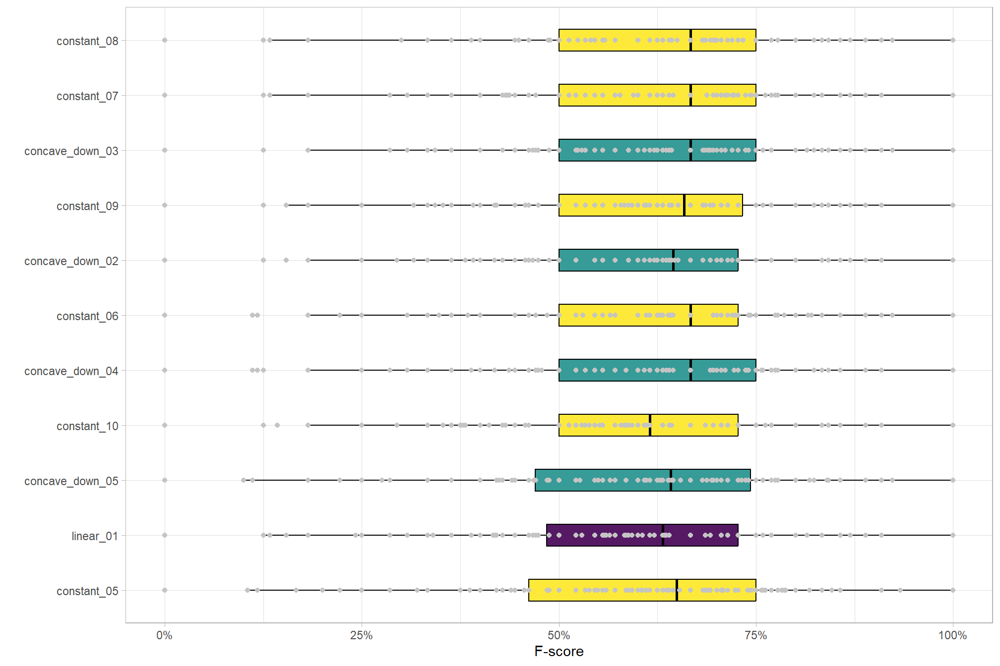
we can print the raw window function definition for those that achieved the highest F-score
agg_temp %>%
dplyr::filter(f_score_rank<=7) %>%
dplyr::arrange(f_score_rank) %>%
dplyr::pull(ws_fn_nm) %>%
purrr::set_names() %>%
# purrr::map(\(nm) purrr::pluck(get_ws_fn_list_ans, nm))
purrr::map(function(nm){
fn <- purrr::pluck(get_ws_fn_list_ans, nm)
dplyr::tibble(
ws_fn_nm = nm
, def = paste(format(fn), collapse = "\n")
)
}) %>%
purrr::list_rbind() %>%
dplyr::inner_join(
agg_temp %>%
dplyr::select(ws_fn_nm, f_score_mean, recall_mean, precision_mean) %>%
dplyr::mutate(
dplyr::across(
dplyr::where(is.numeric)
, ~ scales::percent(.x,accuracy = 0.1)
)
)
) %>%
dplyr::relocate(def,.after = dplyr::everything()) %>%
kableExtra::kbl(
caption = "BLM-TRFO Pinyon-Juniper top ITD window functions"
, col.names = c(
"function<br>name"
, "F-score<br>(mean)"
, "recall<br>(mean)"
, "precision<br>(mean)"
, "function<br>definition"
)
, escape = F
) %>%
kableExtra::kable_styling(font_size = 12, bootstrap_options = c("responsive", "condensed")) %>% #
# make r line breaks (\n) and use monospace font for code
kableExtra::column_spec(5, monospace = T, extra_css = "white-space: pre;")|
function name |
F-score (mean) |
recall (mean) |
precision (mean) |
function definition |
|---|---|---|---|---|
| constant_08 | 62.8% | 66.7% | 69.0% | function (x) dplyr::case_when(base::is.na(x) ~ 0.5, TRUE ~ 4) |
| constant_07 | 62.3% | 68.1% | 66.0% | function (x) dplyr::case_when(base::is.na(x) ~ 0.5, TRUE ~ 3.5) |
| concave_down_03 | 62.2% | 67.3% | 66.8% | function (x) dplyr::case_when(base::is.na(x) ~ 0.5, (0.5 + ((7 - 0.5) * x)/(4.38362068965517 + x)) < 0.5 ~ 0.5, (0.5 + ((7 - 0.5) * x)/(4.38362068965517 + x)) > 7 ~ 7, TRUE ~ (0.5 + ((7 - 0.5) * x)/(4.38362068965517 + x))) |
| constant_09 | 62.0% | 64.3% | 70.9% | function (x) dplyr::case_when(base::is.na(x) ~ 0.5, TRUE ~ 4.5) |
| concave_down_02 | 61.5% | 64.5% | 69.3% | function (x) dplyr::case_when(base::is.na(x) ~ 0.5, (0.5 + ((7 - 0.5) * x)/(2.87931034482759 + x)) < 0.5 ~ 0.5, (0.5 + ((7 - 0.5) * x)/(2.87931034482759 + x)) > 7 ~ 7, TRUE ~ (0.5 + ((7 - 0.5) * x)/(2.87931034482759 + x))) |
| constant_06 | 61.4% | 69.5% | 62.5% | function (x) dplyr::case_when(base::is.na(x) ~ 0.5, TRUE ~ 3) |
| concave_down_04 | 61.3% | 68.3% | 63.8% | function (x) dplyr::case_when(base::is.na(x) ~ 0.5, (0.5 + ((7 - 0.5) * x)/(5.88793103448276 + x)) < 0.5 ~ 0.5, (0.5 + ((7 - 0.5) * x)/(5.88793103448276 + x)) > 7 ~ 7, TRUE ~ (0.5 + ((7 - 0.5) * x)/(5.88793103448276 + x))) |
nice, we’ll select the best non-constant window function for use in evaluation of the species accuracy. if we were to use the constant functions, even if they are the best performing, we would likely be overfitting to this specific data set. in addition to being more in-line with real-world tree height-to-crown relationships, the variable window functions are likely more broadly applicable
project_data_df <- project_data_df %>%
dplyr::mutate(
best_ws_fn_nm = ifelse(
tolower(data_site_nm)=="blm_trfo"
, agg_temp %>%
dplyr::filter(ws_type!="constant") %>%
dplyr::arrange(desc(f_score_mean),desc(f_score_median),desc(recall_mean),desc(precision_mean)) %>%
dplyr::slice(1) %>%
dplyr::pull(ws_fn_nm)
, best_ws_fn_nm
)
)
# project_data_df %>% dplyr::glimpse()full CHM data processing
c2t_process_dir_temp <-
project_data_df %>%
dplyr::filter(tolower(data_site_nm)=="blm_trfo") %>%
dplyr::pull(c2t_process_dir)
nm_temp <-
project_data_df %>%
dplyr::filter(tolower(data_site_nm)=="blm_trfo") %>%
dplyr::pull(data_site_nm)
fnm_temp <- file.path(c2t_process_dir_temp,"best_ws_pred_trees.gpkg")
project_data_df <- project_data_df %>%
dplyr::mutate(
best_ws_pred_trees_fnm = ifelse(c2t_process_dir==c2t_process_dir_temp, fnm_temp, "")
)
###############################################################################################
###############################################################################################
## raster2trees that best ws fn
###############################################################################################
###############################################################################################
if(!file.exists(fnm_temp)){
ws_temp <- project_data_df %>%
dplyr::filter(c2t_process_dir==c2t_process_dir_temp) %>%
dplyr::slice(1) %>%
dplyr::pull(best_ws_fn_nm)
pred_trees_temp <-
1:nrow(ref_plots_list[[this_data_site_nm]]) %>%
# .[1:3] %>%
purrr::map(
\(x)
ws_testtest_fn(
chm = chm_list[[this_data_site_nm]]
, buffer = (competition_radius_m+3) # !!!!! this is being increased significantly to get relative height + 3 for 6 m crown width buffer
, plot_sf =
ref_plots_list[[this_data_site_nm]] %>%
dplyr::ungroup() %>%
dplyr::slice(x) %>%
sf::st_union()
# a named list of functions ex: cloud2trees::itd_ws_functions()
, ws_fn_list = get_ws_fn_list_ans %>% purrr::keep_at(ws_temp) ### !!!!! only the best
)
) %>%
purrr::list_rbind(names_to = "plot_dta_idx")
# pred_trees_temp %>% dplyr::glimpse()
# add plot id
pred_trees_temp <-
pred_trees_temp %>%
dplyr::left_join(
ref_plots_list[[this_data_site_nm]] %>%
dplyr::mutate(plot_dta_idx=dplyr::row_number()) %>%
sf::st_drop_geometry() %>%
dplyr::select(plot_dta_idx,plot_id)
, by = "plot_dta_idx"
) %>%
# make sure geom
sf::st_set_geometry("geometry")
# pred_trees_temp %>% dplyr::glimpse()
# get dbh
pred_trees_temp_dbh_temp <-
pred_trees_temp %>%
# this is because we did tree detection by plot
dplyr::rename(xxxtreeID=treeID) %>%
dplyr::mutate(
treeID = dplyr::row_number() %>% as.character()
) %>%
cloud2trees::trees_dbh()
# pred_trees_temp_dbh_temp %>% dplyr::glimpse()
# get rh
pred_trees_temp_rh_temp <-
# have to do this by plot so that all trees are not included
unique(pred_trees_temp$plot_dta_idx) %>%
purrr::map(
\(idx)
pred_trees_temp %>%
dplyr::filter(plot_dta_idx==idx) %>%
get_relative_height_fn(radius = competition_radius_m)
) %>%
purrr::list_rbind()
# pred_trees_temp_rh_temp %>% dplyr::glimpse()
# pred_trees_temp_rh_temp %>%
# ggplot2::ggplot() +
# ggplot2::geom_point(ggplot2::aes(x = tree_height_m, y=rel_tree_height_m)) +
# ggplot2::facet_wrap(facets=dplyr::vars(plot_id))
# add to trees
pred_trees_temp <-
pred_trees_temp %>%
dplyr::mutate(
join_id = dplyr::row_number() %>% as.character()
) %>%
dplyr::left_join(
pred_trees_temp_dbh_temp %>%
sf::st_drop_geometry() %>%
dplyr::mutate(
join_id = as.character(treeID)
) %>%
dplyr::select(
join_id, tidyselect::starts_with("fia_est_dbh"), dbh_cm
)
, by = "join_id"
) %>%
dplyr::select(-c(join_id)) %>%
dplyr::left_join(
pred_trees_temp_rh_temp %>%
sf::st_drop_geometry() %>%
dplyr::select(
plot_dta_idx,treeID,rel_tree_height_m
)
, by = dplyr::join_by(plot_dta_idx,treeID)
)
# pred_trees_temp %>% dplyr::glimpse()
# save
sf::st_write(pred_trees_temp, dsn = fnm_temp, quiet = T, append = F)
}else{
pred_trees_temp <- sf::st_read(fnm_temp, quiet = T)
}
# pred_trees_temp %>% dplyr::glimpse()
###############################################################################################
###############################################################################################
## now we need to do the matching
# again to only keep trees in plots for individual tree species comparisons
###############################################################################################
###############################################################################################
im_temp <-
plot_iter_instance_match_fn(
ref_plots = ref_plots_list[[this_data_site_nm]]
, ref_pts = ref_trees_list[[this_data_site_nm]]
, pred_polys = pred_trees_temp
, min_ht_m = this_min_ht_m
, min_dbh_cm = NA
)
# im_temp %>% dplyr::glimpse()
# add to the ref trees list
pred_ref_tree_match_list[[this_data_site_nm]] <- im_temp
###############################################################################################
###############################################################################################
## save to the pred trees
###############################################################################################
###############################################################################################
# let's also save the plot-level ITD predictions for this ws
pred_trees_list[[this_data_site_nm]] <-
pred_trees_temp %>%
# which ws
dplyr::filter(
ws_fn_nm %in% (
project_data_df %>%
dplyr::filter(tolower(data_site_nm)=="blm_trfo") %>%
dplyr::pull(best_ws_fn_nm)
)
) %>%
# filter for trees used in instance matching
# which included thresholds used for measuring field trees
# and plot spatial alignment
dplyr::inner_join(
pred_ref_tree_match_list[[this_data_site_nm]] %>%
dplyr::select(plot_id,ws_fn_nm,pred_treeID) %>%
dplyr::filter(!is.na(pred_treeID)) %>%
dplyr::rename(treeID=pred_treeID)
, by = dplyr::join_by(plot_id,ws_fn_nm,treeID)
)
# pred_trees_list8.4 Species/Genus Prediction Method
for some context of the primary objective of this analysis, here is what we said in the cloud2trees manuscript (a draft of the manuscript which may be different than what was actually published):
However, taxonomic differentiation using airborne lidar alone remains one of the most technically challenging aspects of forest inventory workflows (White et al., 2016, 2025; Fassnacht et al., 2024). In practice, genus-level distinction is often more realistic when relying on remote sensing and supplemental spatial data (Vauhkonen et al., 2014b). As a practical, computationally efficient approach, future research could evaluate predicting tree-level species or genus for potential integration into cloud2trees by leveraging supplemental spatial datasets. Testing could evaluate either using tree lists from FIA plots linked through a spatial overlay with TreeMap (Houtman et al., 2025) to train a taxonomic classification model based on structural and competition metrics shared between FIA and cloud2trees tree lists, or by proportionally assigning species using BigMap species-level proportional biomass raster data (Wilson et al., 2012, 2018). Incorporating finer-scale taxonomic classification than the currently implemented FIA forest type groups into the cloud2trees tree list will enable the integration of detailed biomass equations such as the National Scale Volume Biomass system (NSVB; Westfall et al., 2024) and other allometries that require species- or genera-level information (e.g., Réjou‐Méchain et al., 2017; Gonzalez‐Akre et al., 2022).
cloud2trees does not currently include functionality to attach species to it’s tree list. there are a few paths forward for performing species-specific workflows with the cloud2trees tree list:
the proposed method which we are evaluating presently, will predict tree-level species using the TreeMap imputed FIA plot tree list to build a species classification model based on height and tree location to attach tree species to our tree list. The model will inherently account for the proportional distribution of different species.
early testing of the proposed method used a bayesian hierarchical model grouped by imputed FIA plot identifier that allows the intercept and the slope of height to vary by plot took quite a while to run for a relatively small area (~20-30 mins). as such, we are going to use a random forest (RF) classifier to enable more computationally efficient classification. cloud2trees already implements random forest models to model missing HMD and CBH values that were not successfully extracted from the point cloud and uses a model averaging method that subsamples the training data (to reduce model fit times), estimates the model several times with different subsamples, then model averages the predictions. Because the species is not a metric variable that can be averaged, we’ll use the same method but employ a model majority voting system instead. we can do this with some of the cloud2trees built-in functionality.
ultimately, if the proposed species/genera classification method achieves decent accuracy results, it could be integrated into the cloud2trees framework as cloud2trees::trees_species(), for example. this function would take an input spatial tree list and attach the predicted species/genera
8.4.1 Training Data
load in the TreeMap data and clip to our trees as in cloud2trees::trees_dbh()
# test to get the treemap data for our aoi
treemap_data_loader_ans <-
pred_trees_list[[this_data_site_nm]] %>%
dplyr::ungroup() %>%
sf::st_union() %>%
sf::st_bbox() %>%
sf::st_as_sfc() %>%
treemap_data_loader()Check out the TreeMap raster of forest types for our area of interest defined using the spatial extent of the predicted trees
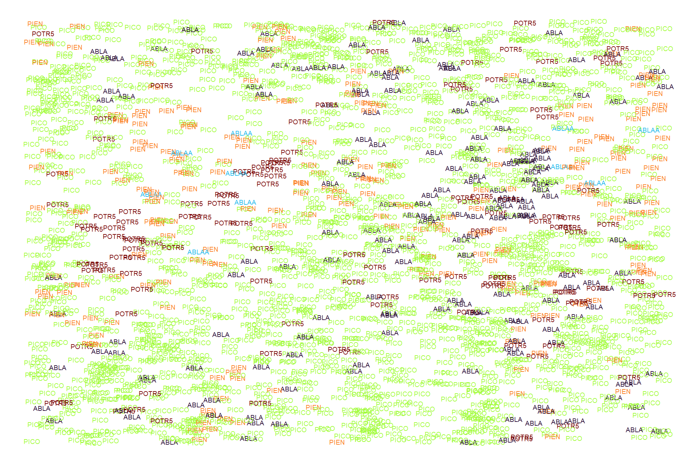
here is the stability of those imputed TreeMap FIA plot id’s
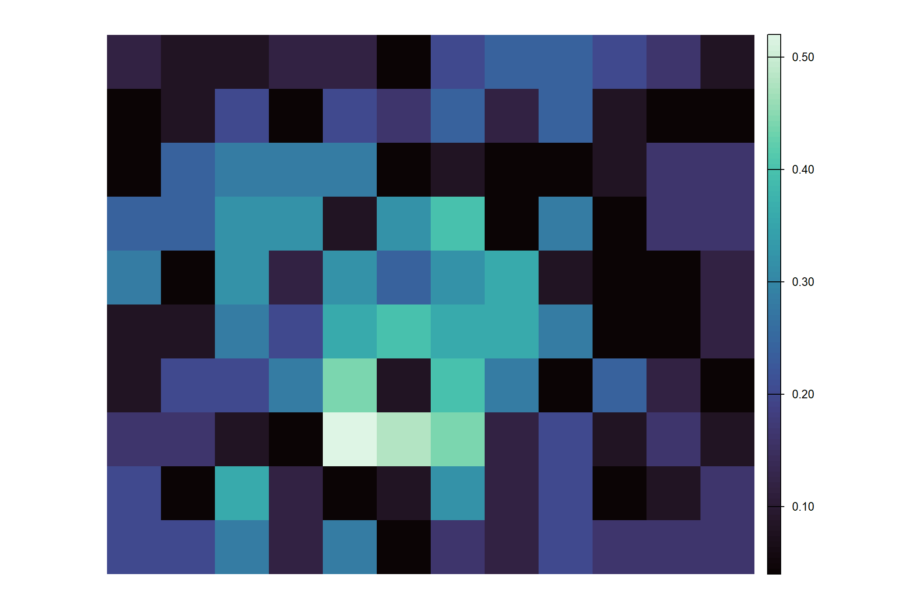
lets’ review the spatial tree list we’ll use for training data which comes from the TreeMap FIA imputed plots
what’s in the FIA tree list using the TreeMap imputed plots filtered for our area of interest?
## Rows: 277,928
## Columns: 14
## $ cell <dbl> 3, 3, 3, 3, 3, 3, 3, 3, 3, 3, 4, 4, 4, 4, 4, 4, 4, 4…
## $ x <dbl> -1099053, -1099038, -1099052, -1099037, -1099063, -1…
## $ y <dbl> 1721926, 1721927, 1721952, 1721932, 1721942, 1721937…
## $ tm_id <chr> "25021", "25021", "25021", "25021", "25021", "25021"…
## $ stability_weight <dbl> 0.08, 0.08, 0.08, 0.08, 0.08, 0.08, 0.08, 0.08, 0.08…
## $ cn <chr> "188758105020004", "188758105020004", "1887581050200…
## $ species_symbol <fct> QUGA, QUGA, QUGA, QUGA, QUGA, QUGA, JUOS, QUGA, QUGA…
## $ tree_weight <int> 39, 39, 39, 39, 39, 39, 39, 39, 39, 39, 24, 24, 24, …
## $ dbh_cm <dbl> 4.318, 3.302, 4.572, 3.556, 4.572, 3.810, 49.530, 4.…
## $ tree_height_m <dbl> 1.8288, 1.5240, 1.5240, 1.8288, 2.4384, 1.8288, 5.48…
## $ tree_id <int> 1119, 1120, 1121, 1122, 1123, 1124, 1125, 1126, 1127…
## $ max_tree_height_m <dbl> 10.3632, 10.3632, 10.3632, 10.3632, 10.3632, 10.3632…
## $ rel_tree_height_m <dbl> 0.1764706, 0.1470588, 0.1470588, 0.1764706, 0.235294…
## $ geometry <POINT [m]> POINT (-1099053 1721926), POINT (-1099038 1721…species distribution?
treemap_data_loader_ans$treemap_trees_spatial_df %>%
sf::st_drop_geometry() %>%
dplyr::count(species_symbol) %>%
dplyr::arrange(desc(n)) %>%
dplyr::mutate(
percent=n/sum(n)
, percent = scales::percent(percent,accuracy=0.1)
, n = scales::comma(n,accuracy = 1)
) %>%
kableExtra::kbl(
caption = "TreeMap Species Distribution over Study Area"
) %>%
kableExtra::kable_styling()| species_symbol | n | percent |
|---|---|---|
| JUOS | 128,472 | 46.2% |
| PIED | 119,723 | 43.1% |
| QUGA | 19,352 | 7.0% |
| PSME | 3,898 | 1.4% |
| JUMO | 1,763 | 0.6% |
| JUSC2 | 1,362 | 0.5% |
| JUDE2 | 1,285 | 0.5% |
| PIPO | 1,237 | 0.4% |
| PIMO | 744 | 0.3% |
| POFR2 | 54 | 0.0% |
| POTR5 | 13 | 0.0% |
| PIEN | 12 | 0.0% |
| PIPU | 7 | 0.0% |
| POAN3 | 4 | 0.0% |
| ABCO | 2 | 0.0% |
here is the spatial distribution of the species for a sample of the trees
samp_temp <- treemap_data_loader_ans$treemap_trees_spatial_df %>%
dplyr::slice_sample(n=2222)
samp_temp %>%
ggplot2::ggplot(ggplot2::aes(x=x,y=y,color=species_symbol)) +
ggplot2::geom_point(alpha = 0.6) +
ggplot2::scale_color_viridis_d(option = "turbo") +
ggplot2::theme_void()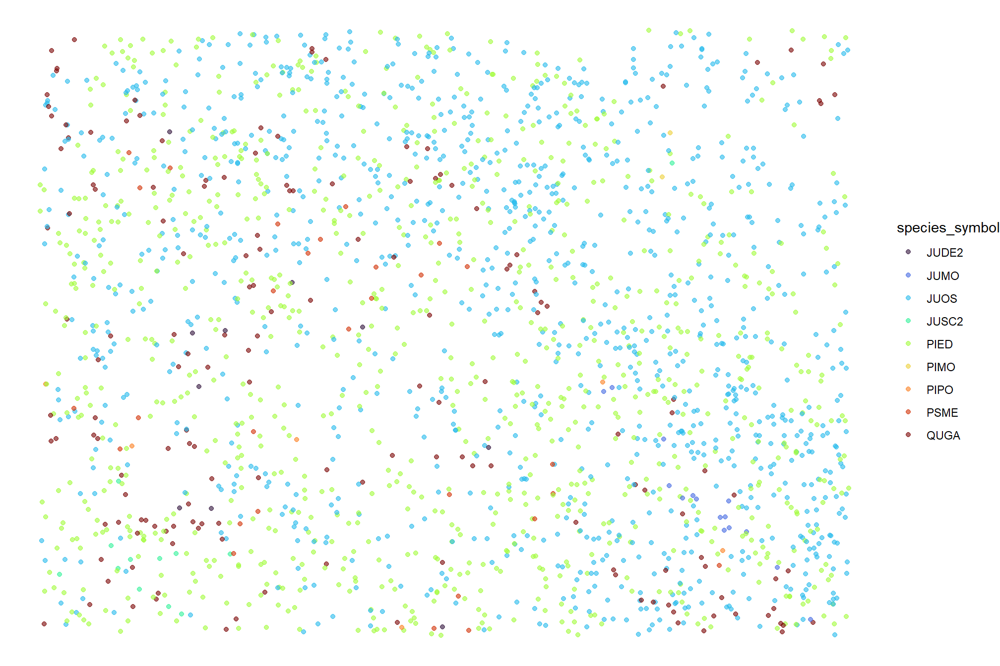
that is difficult to read, let’s actually print the species symbol
samp_temp %>%
ggplot2::ggplot(
mapping = ggplot2::aes(x = x, y = y, fill = species_symbol, color = species_symbol, label = species_symbol)
) +
# ggplot2::geom_hline(yintercept = median(treemap_data_loader_ans$treemap_trees_spatial_df$y) , color = "black") +
# ggplot2::geom_vline(xintercept = median(treemap_data_loader_ans$treemap_trees_spatial_df$x), color = "black") +
ggplot2::geom_text(size = 2.5) +
ggplot2::scale_color_viridis_d(option = "turbo") +
ggplot2::labs(
x = "x", y = "y"
) +
ggplot2::theme_void() +
ggplot2::theme(
legend.position = "none"
)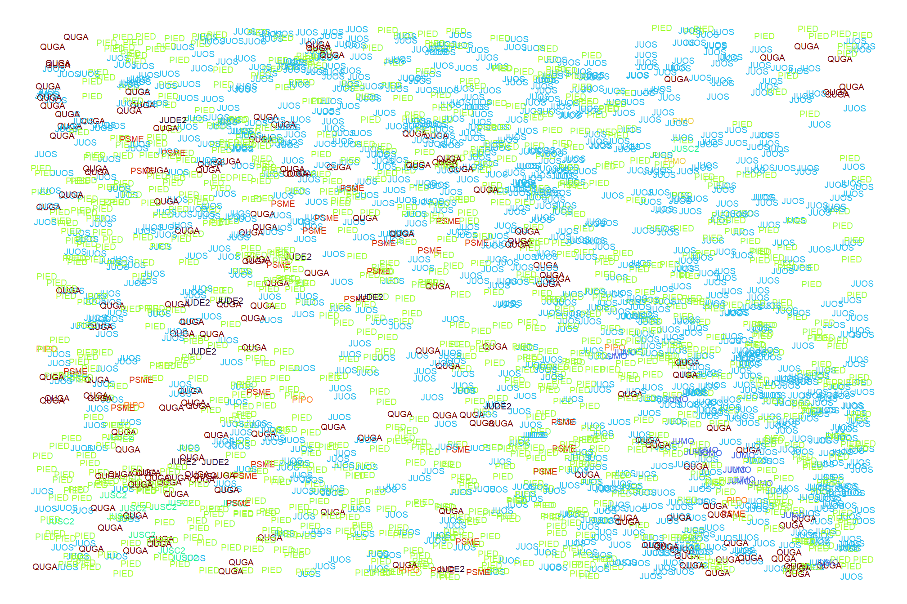
let’s check out the stability_weight distribution which is unique for each raster cell in the data extent
stab_temp <-
# stability_weight should be unique by cell
treemap_data_loader_ans$treemap_trees_spatial_df %>%
sf::st_drop_geometry() %>%
dplyr::distinct(cell,stability_weight) %>%
# add on forest type
dplyr::left_join(
treemap_data_loader_ans$treemap_rast %>%
terra::as.data.frame(xy=T, cells = T) %>%
dplyr::select(cell, ForTypName) %>%
dplyr::rename(f_type=ForTypName)
) %>%
dplyr::mutate(
f_type = f_type %>%
forcats::fct_drop() %>%
forcats::fct_reorder(stability_weight,.fun = "median") %>%
as.ordered()
)
stab_temp %>%
# dplyr::glimpse()
ggplot2::ggplot(
mapping = ggplot2::aes(y = f_type, x = stability_weight, fill = f_type)
) +
ggplot2::geom_boxplot(
width = 0.4
, alpha=0.9
, outliers = F
, color = "black"
) +
ggplot2::scale_fill_viridis_d(option = "magma",direction=-1,begin=0.1,end=0.5) +
ggplot2::labs(y="") +
ggplot2::theme_light() +
ggplot2::theme(
legend.position = "none"
, legend.direction = "horizontal"
)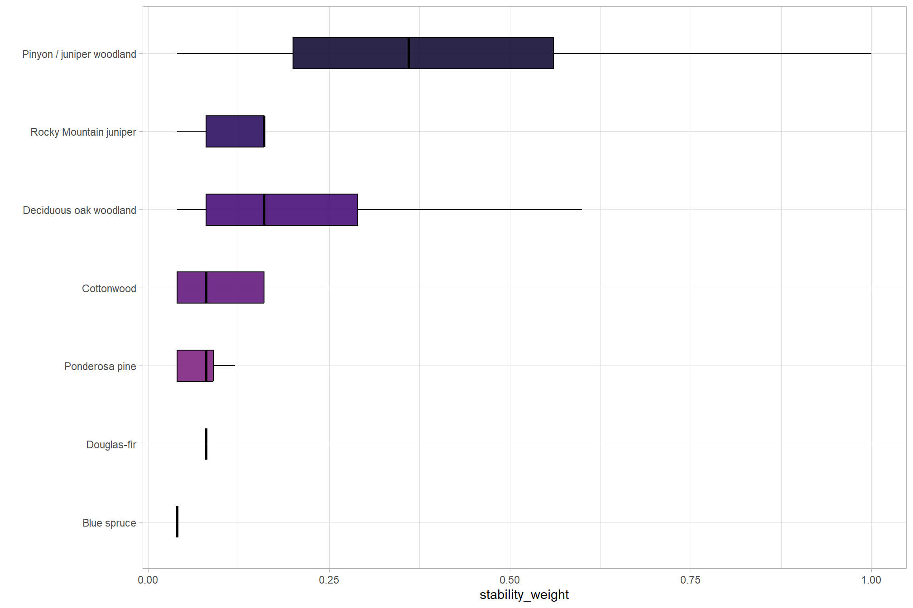
lastly, we’ll look at the relative height data for a sample of the data
focal_cell_temp <-
treemap_data_loader_ans$treemap_trees_spatial_df %>%
sf::st_drop_geometry() %>%
dplyr::filter(
stability_weight>=
quantile(treemap_data_loader_ans$treemap_trees_spatial_df$stability_weight,probs=0.9)
) %>%
dplyr::count(cell) %>%
dplyr::slice_max(order_by = n, n = 10, with_ties = F) %>%
dplyr::slice_sample(n=1) %>%
dplyr::pull(cell)
aoi_temp <-
treemap_data_loader_ans$treemap_trees_spatial_df %>%
dplyr::filter(cell == focal_cell_temp) %>%
sf::st_union() %>%
sf::st_centroid() %>%
sf::st_buffer(terra::res(treemap_data_loader_ans$treemap_rast)[1]) %>%
sf::st_bbox() %>%
sf::st_as_sfc()
treemap_data_loader_ans$treemap_trees_spatial_df %>%
sf::st_intersection(aoi_temp) %>%
sf::st_drop_geometry() %>%
dplyr::select(x,y,tree_height_m,rel_tree_height_m) %>%
# tidyr::pivot_longer(cols = -c(x,y)) %>%
# dplyr::glimpse()
ggplot2::ggplot(
mapping = ggplot2::aes(x=x,y=y)
) +
ggplot2::geom_point(mapping = ggplot2::aes(color = rel_tree_height_m), size = 4) +
ggplot2::scale_color_distiller(palette = "Greys", direction = 1) +
ggnewscale::new_scale_color() +
ggplot2::geom_point(mapping = ggplot2::aes(color = tree_height_m), size = 1.8) +
ggplot2::scale_color_distiller(palette = "Oranges", direction = 1) +
ggplot2::theme_void()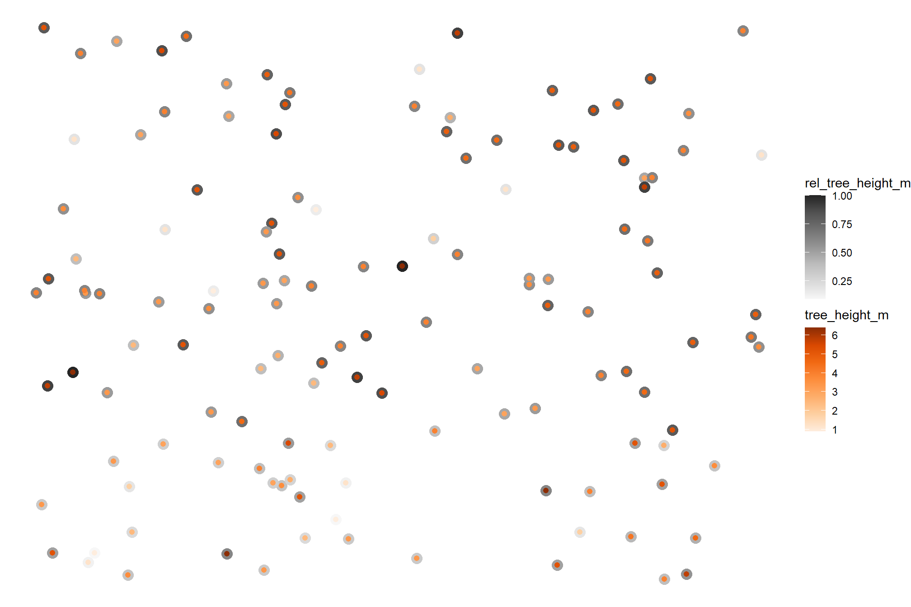
8.5 Predict Species/Genus Application
let’s implement a random forest model majority voting for species with the objective to reduce estimation time (compared to a Bayesian Softmax model)
tree species will be our dependent variable and the most simple model will use tree height and tree location (X and Y coordinates) as independent variables. The training FIA tree list data (identified from the TreeMap imputed plots of the area of interest) includes tree height and we’ll use the centroid of the TreeMap 30m raster cell to represent the individual tree X and Y location (i.e. each tree within the same cell will have the same coordinate). Considering the combined tree height and spatial location via a full interaction model (i.e. height*x*y) allows the model to capture how the species-height relationship varies across space.
let’s estimate the RF using data subsampling and model averaging for a computationally efficient way to get estimates over broad areas with potentially large tree lists. Model averaging can improve the robustness and accuracy of random forest models, especially when dealing with large datasets.
# do it with our data
pred_trees_list[[this_data_site_nm]] <-
get_species_symbol_predictions(
treemap_data_loader_ans = treemap_data_loader_ans
, predict_df = pred_trees_list[[this_data_site_nm]]
) %>%
# for this project we'll just rename to maintain consistent across data sources
dplyr::rename(species_symbol=predicted_species_symbol)
# pred_trees_list[[this_data_site_nm]] %>%
# sf::st_drop_geometry() %>%
# dplyr::count(species_symbol) %>%
# dplyr::arrange(desc(n)) %>%
# dplyr::mutate(pct=scales::percent(n/sum(n), accuracy=0.1))let’s check out the distribution of the predicted species
pred_trees_list[[this_data_site_nm]] %>%
dplyr::inner_join(
ref_plots_list[[this_data_site_nm]] %>%
# dplyr::slice(1) %>%
sf::st_drop_geometry() %>%
dplyr::select(plot_id)
, by = "plot_id"
) %>%
dplyr::arrange(desc(species_symbol)) %>%
sf::st_drop_geometry() %>%
dplyr::ungroup() %>%
dplyr::count(species_symbol) %>%
dplyr::ungroup() %>%
dplyr::mutate(
pct = n/sum(n)
, lab = ifelse(
pct>0.0005
, paste0(
scales::percent(pct,accuracy=1)
,"\n("
, scales::comma(n,accuracy=1)
, ")"
)
, ""
)
) %>%
dplyr::ungroup() %>%
# dplyr::glimpse()
ggplot2::ggplot(
mapping = ggplot2::aes(y = pct, x = species_symbol)
) +
ggplot2::geom_col(
mapping = ggplot2::aes(fill = species_symbol)
, width = 0.6
, color = NA, alpha = 0.8
) +
ggplot2::geom_text(
mapping = ggplot2::aes(label = lab)
, color = "black", size = 2.5, vjust = -0.2
) +
ggplot2::scale_fill_viridis_d(option = "turbo") +
ggplot2::scale_x_discrete(drop = F) +
ggplot2::scale_y_continuous(
# breaks = seq(0,1,by=0.2)
labels = scales::percent
, expand = ggplot2::expansion(mult = c(0,0.15))
) +
ggplot2::labs(
x = "", y = "", fill = ""
, subtitle = "Predicted Species"
) +
ggplot2::theme_light()+
ggplot2::theme(
legend.position = "none"
, strip.text = ggplot2::element_text(size = 11, color = "black", face = "bold")
, axis.text.x = ggplot2::element_text(size = 7, angle = 45, hjust = 1, vjust = 1)
, axis.text.y = ggplot2::element_blank()
, axis.ticks.y = ggplot2::element_blank()
)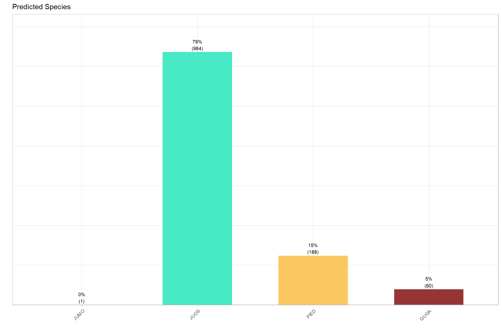
make sure the reference species data is clean
# update the reference tree list
ref_trees_list[[this_data_site_nm]] <-
ref_trees_list[[this_data_site_nm]] %>%
clean_ref_species_fn(
my_treemap_data_loader_ans = treemap_data_loader_ans
)what is the distribution of the cleaned reference field data species?
ref_trees_list[[this_data_site_nm]] %>%
sf::st_drop_geometry() %>%
dplyr::count(species_symbol) %>%
dplyr::arrange(desc(n))## # A tibble: 2 × 2
## species_symbol n
## <chr> <int>
## 1 PIED 938
## 2 JUOS 5928.6 Species/Genus Accuracy Evaluation
8.6.1 Tree-Level Accuracy
we’re going to use the tree-level prediction and reference data for all TP (true positive) predictions to perform confusion matrix accuracy evaluation of the species predictions.
using the confusion matrix evaluation we’ll calculate the following metrics:
- Overall Accuracy: Measures the global percentage of all correctly classified trees out of the entire dataset of true positive (TP) observations. Provides an overall summary metric but can mask performance on uncommon species.
- User’s Accuracy (precision): Measures the reliability of specific predicted species. For example, if the method predicts a tree is a ponderosa pine, how often it is actually true.
- Producer’s Accuracy (recall): Measures how well the model successfully aligns with what was measured on the ground. For example, out of all real ponderosa pine trees measured in the field, what percentage did the method correctly identify.
let’s make a function to get the confusion matrix and those accuracy metrics
# test that
confusion_matrix_species_temp <- confusion_matrix_tree_class_fn(
pred_ref_match = pred_ref_tree_match_list[[this_data_site_nm]]
, pred_trees = pred_trees_list[[this_data_site_nm]]
, ref_trees = ref_trees_list[[this_data_site_nm]]
, use_genus = F
)
confusion_matrix_genus_temp <- confusion_matrix_tree_class_fn(
pred_ref_match = pred_ref_tree_match_list[[this_data_site_nm]]
, pred_trees = pred_trees_list[[this_data_site_nm]]
, ref_trees = ref_trees_list[[this_data_site_nm]]
, use_genus = T
)let’s check out the confusion matrix at the species level
| . | JUOS | PIED | QUGA | Total Reference | Producer’s Accuracy | |
|---|---|---|---|---|---|---|
| Reference | JUOS | 261 | 63 | 5 | 329 | 79.3% |
| PIED | 443 | 70 | 6 | 519 | 13.5% | |
| QUGA | 0 | 0 | 0 | 0 | NA | |
| Total Predicted | 704 | 133 | 11 | 848 | NA | |
| User’s Accuracy | 37.1% | 52.6% | 0.0% | NA | OA: 39.0% |
and the confusion matrix at the genus level
| . | Juniperus | Pinus | Quercus | Total Reference | Producer’s Accuracy | |
|---|---|---|---|---|---|---|
| Reference | Juniperus | 261 | 63 | 5 | 329 | 79.3% |
| Pinus | 443 | 70 | 6 | 519 | 13.5% | |
| Quercus | 0 | 0 | 0 | 0 | NA | |
| Total Predicted | 704 | 133 | 11 | 848 | NA | |
| User’s Accuracy | 37.1% | 52.6% | 0.0% | NA | OA: 39.0% |
8.6.2 Site-Level Accuracy
we shift away from individual item matching and use the Bray-Curtis Dissimilarity Index. This metric compares the proportional compositions of each species predicted by the model against the reference proportions within a defined area or site.
# test that
similarity_tree_species_temp <- similarity_tree_class_fn(
pred_trees = pred_trees_list[[this_data_site_nm]]
, ref_trees = ref_trees_list[[this_data_site_nm]]
, use_genus = F
)
similarity_tree_genus_temp <- similarity_tree_class_fn(
pred_trees = pred_trees_list[[this_data_site_nm]]
, ref_trees = ref_trees_list[[this_data_site_nm]]
, use_genus = T
)let’s check out the proportional comparisons at the species level
| data | PIED | JUOS | QUGA | JUMO |
|---|---|---|---|---|
| reference |
61.3% (938) |
38.7% (592) |
0.0% (0) |
0.0% (0) |
| predicted |
15.5% (188) |
79.5% (964) |
4.9% (60) |
0.1% (1) |
|
difference (predicted-reference) |
-45.8% | 40.8% | 4.9% | 0.1% |
also, the site-wide species compositional accuracy metrics
| value | interpretation | |
|---|---|---|
| Bray-Curtis Dissimilarity Index | 45.8% | proportion of relative species distribution mis-matched |
| Bray-Curtis Similarity | 54.2% | proportion of total distribution matching perfectly |
| Proportional RMSE | 30.8% | average percentage deviation error margin per species |
let’s check out the proportional comparisons at the genus level
| data | Pinus | Juniperus | Quercus |
|---|---|---|---|
| reference |
61.3% (938) |
38.7% (592) |
0.0% (0) |
| predicted |
15.5% (188) |
79.6% (965) |
4.9% (60) |
|
difference (predicted-reference) |
-45.8% | 40.9% | 4.9% |
also, the site-wide genus compositional accuracy metrics
| value | interpretation | |
|---|---|---|
| Bray-Curtis Dissimilarity Index | 45.8% | proportion of relative genus distribution mis-matched |
| Bray-Curtis Similarity | 54.2% | proportion of total distribution matching perfectly |
| Proportional RMSE | 35.6% | average percentage deviation error margin per genus |
plot the proportion of total by species
similarity_tree_species_temp$species_comp_df %>%
dplyr::select(species_symbol, pred_pct, ref_pct) %>%
tidyr::pivot_longer(
cols = c(pred_pct, ref_pct)
) %>%
dplyr::mutate(
lab = ifelse(
value>0.05
, paste0(
species_symbol
,"\n("
, scales::percent(value,accuracy=1)
, ")"
)
, ""
)
) %>%
dplyr::mutate(
name = ifelse(name == "pred_pct", "predicted", "reference")
, species_symbol = forcats::fct_reorder(species_symbol, value, .fun = sum)
) %>%
ggplot2::ggplot(
mapping = ggplot2::aes(x = name, y = value, fill = species_symbol)
) +
ggplot2::geom_col(width = 0.5, color = NA, alpha = 0.9) +
ggplot2::geom_text(
mapping = ggplot2::aes(label = lab, group = species_symbol, fontface = "bold")
# , color = "gray90"
, size = 2.5
, position = ggplot2::position_stack(vjust = 0.5)
) +
ggplot2::scale_y_continuous(labels = scales::percent, breaks = scales::breaks_extended(n=9)) +
ggplot2::scale_fill_viridis_d(option = "turbo", begin=0.05, end = 0.95) +
ggplot2::labs(
subtitle = "Species Composition Comparison"
, x = ""
, y = ""
, fill = ""
) +
ggplot2::theme_light() +
ggplot2::theme(legend.position = "top")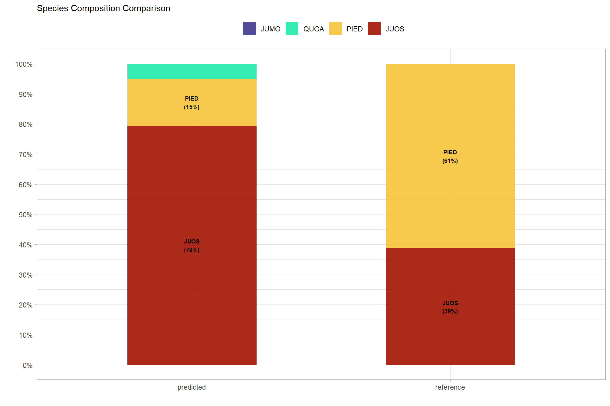
plot the proportion of total by genus
similarity_tree_species_temp$species_comp_df %>%
dplyr::group_by(species_genus) %>%
dplyr::summarise(dplyr::across(c(pred_pct,ref_pct),sum)) %>%
dplyr::ungroup() %>%
dplyr::select(species_genus, pred_pct, ref_pct) %>%
tidyr::pivot_longer(
cols = c(pred_pct, ref_pct)
) %>%
dplyr::mutate(
lab = ifelse(
value>0.05
, paste0(
species_genus
,"\n("
, scales::percent(value,accuracy=1)
, ")"
)
, ""
)
) %>%
dplyr::mutate(
name = ifelse(name == "pred_pct", "predicted", "reference")
, species_genus = forcats::fct_reorder(species_genus, value, .fun = sum)
) %>%
ggplot2::ggplot(
mapping = ggplot2::aes(x = name, y = value, fill = species_genus)
) +
ggplot2::geom_col(width = 0.5, color = NA, alpha = 0.9) +
ggplot2::geom_text(
mapping = ggplot2::aes(label = lab, group = species_genus, fontface = "bold")
# , color = "gray90"
, size = 2.5
, position = ggplot2::position_stack(vjust = 0.5)
) +
ggplot2::scale_y_continuous(labels = scales::percent, breaks = scales::breaks_extended(n=9)) +
ggplot2::scale_fill_viridis_d(option = "magma", begin = 0.25) +
ggplot2::labs(
subtitle = "Genus Composition Comparison"
, x = ""
, y = ""
, fill = ""
) +
ggplot2::theme_light() +
ggplot2::theme(legend.position = "top")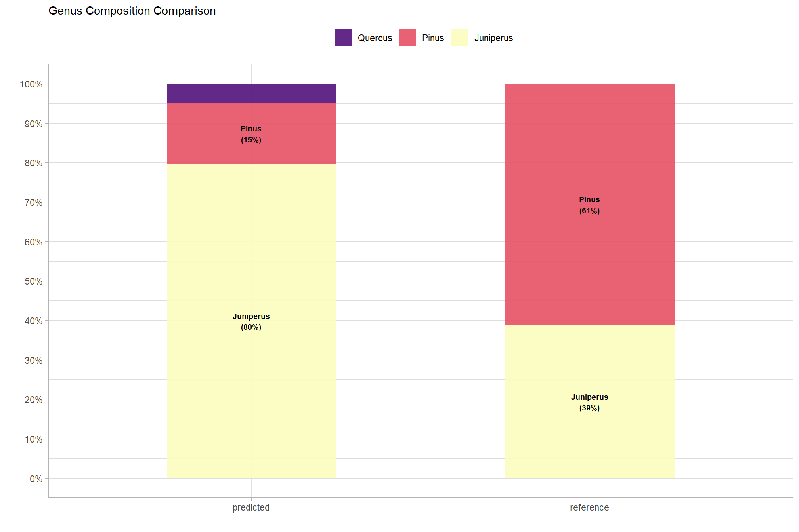
lastly, we’ll update our tracking data to include these accuracy metrics
project_data_df <-
project_data_df %>%
dplyr::mutate(
## tree level
acc_tree_species_overall = ifelse(
data_site_nm==this_data_site_nm
, confusion_matrix_species_temp$overall_accuracy
, acc_tree_species_overall
)
, acc_tree_genus_overall = ifelse(
data_site_nm==this_data_site_nm
, confusion_matrix_genus_temp$overall_accuracy
, acc_tree_genus_overall
)
) %>%
## site level: species
### for the other times, just dplyr::rows_patch...
dplyr::rows_patch(
similarity_tree_species_temp$sim_table_df %>%
# reshape
dplyr::mutate(
metric_nm = dplyr::recode_values(
metric
, "Bray-Curtis Dissimilarity Index" ~ "bc_dissimilarity"
, "Bray-Curtis Similarity" ~ "bc_similarity"
, "Proportional RMSE" ~ "prop_rmse"
)
) %>%
dplyr::select(metric_nm,value) %>%
tidyr::pivot_wider(names_from = metric_nm, values_from = value) %>%
dplyr::rename_with(.fn = ~paste0("acc_site_species_",.x,recycle0 = T)) %>%
dplyr::mutate(data_site_nm=this_data_site_nm)
, by = "data_site_nm"
) %>%
## site level: genus
### for the other times, just dplyr::rows_patch...
dplyr::rows_patch(
similarity_tree_genus_temp$sim_table_df %>%
# reshape
dplyr::mutate(
metric_nm = dplyr::recode_values(
metric
, "Bray-Curtis Dissimilarity Index" ~ "bc_dissimilarity"
, "Bray-Curtis Similarity" ~ "bc_similarity"
, "Proportional RMSE" ~ "prop_rmse"
)
) %>%
dplyr::select(metric_nm,value) %>%
tidyr::pivot_wider(names_from = metric_nm, values_from = value) %>%
dplyr::rename_with(.fn = ~paste0("acc_site_genus_",.x,recycle0 = T)) %>%
dplyr::mutate(data_site_nm=this_data_site_nm)
, by = "data_site_nm"
)
# project_data_df %>% dplyr::glimpse()